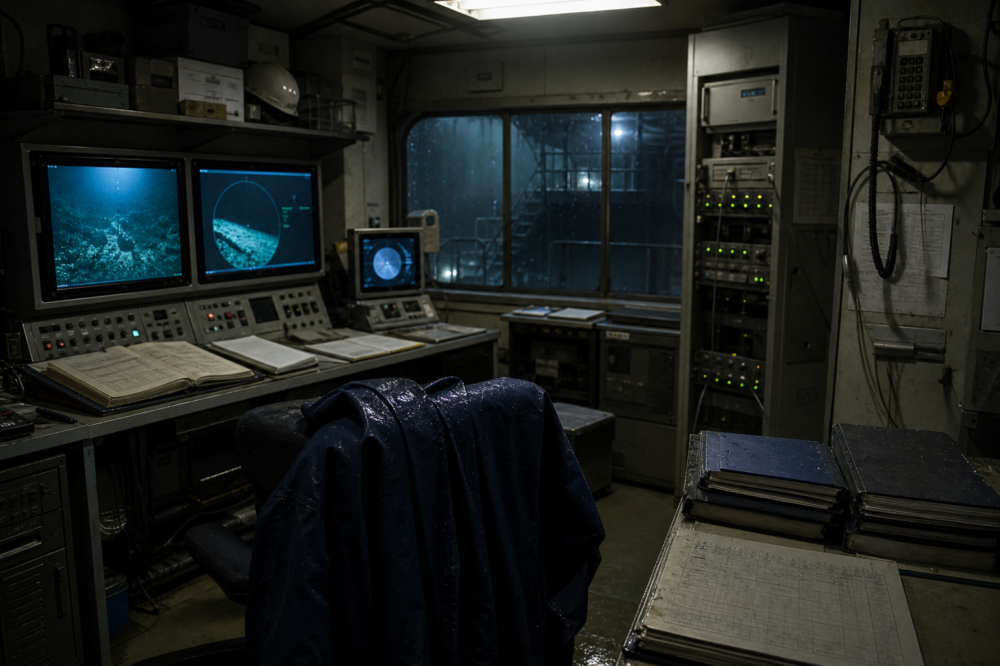

お知らせ
- 事故番号OBS-1118の公開範囲を更新。
- 閉鎖判断に関する議事録。
- 資料室に移した冊子一覧。

公開資料
黒潮海底観測所は2014年に閉鎖され、現在は公開資料と一部の制限記録だけが残っています。
| OBS-1118 | 2014年11月18日発生。 |
|---|---|
| 議事録 | 欠測と記録保存の扱い。 |
| 資料室 | 深度ログ第七冊が閲覧制限。 |

黒潮海底観測所は2014年に閉鎖され、現在は公開資料と一部の制限記録だけが残っています。
| OBS-1118 | 2014年11月18日発生。 |
|---|---|
| 議事録 | 欠測と記録保存の扱い。 |
| 資料室 | 深度ログ第七冊が閲覧制限。 |